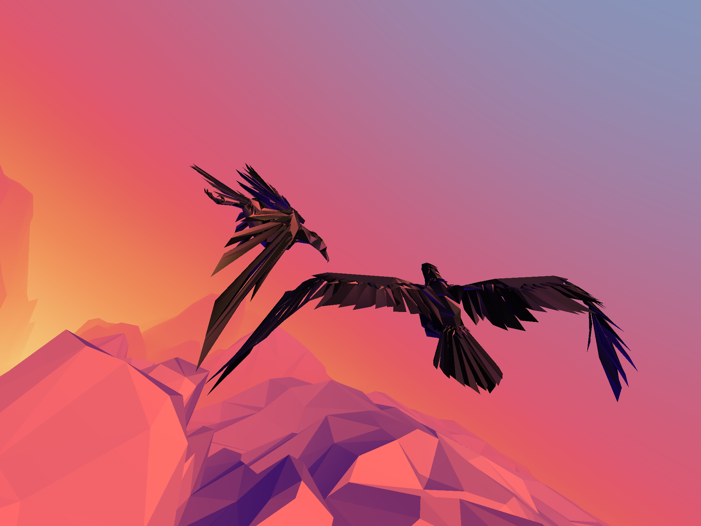
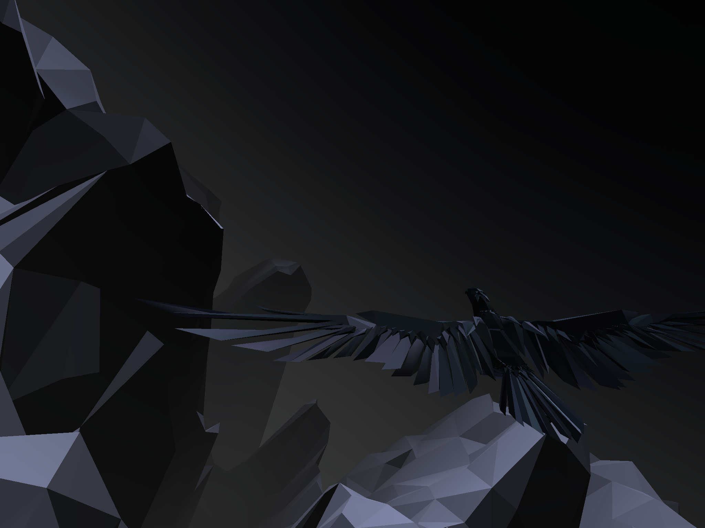
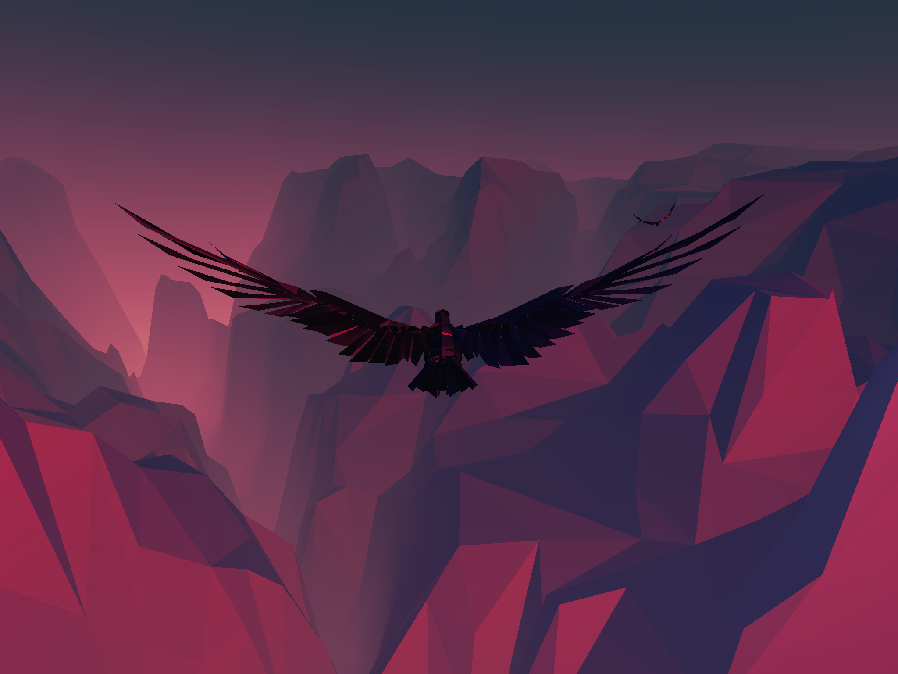
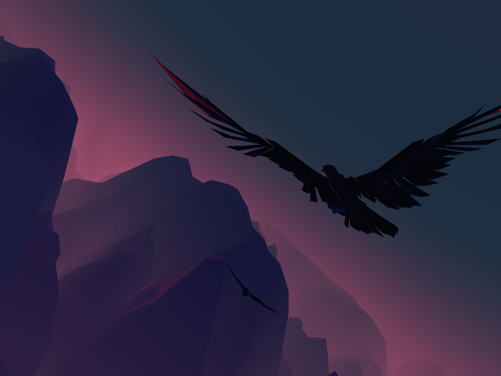
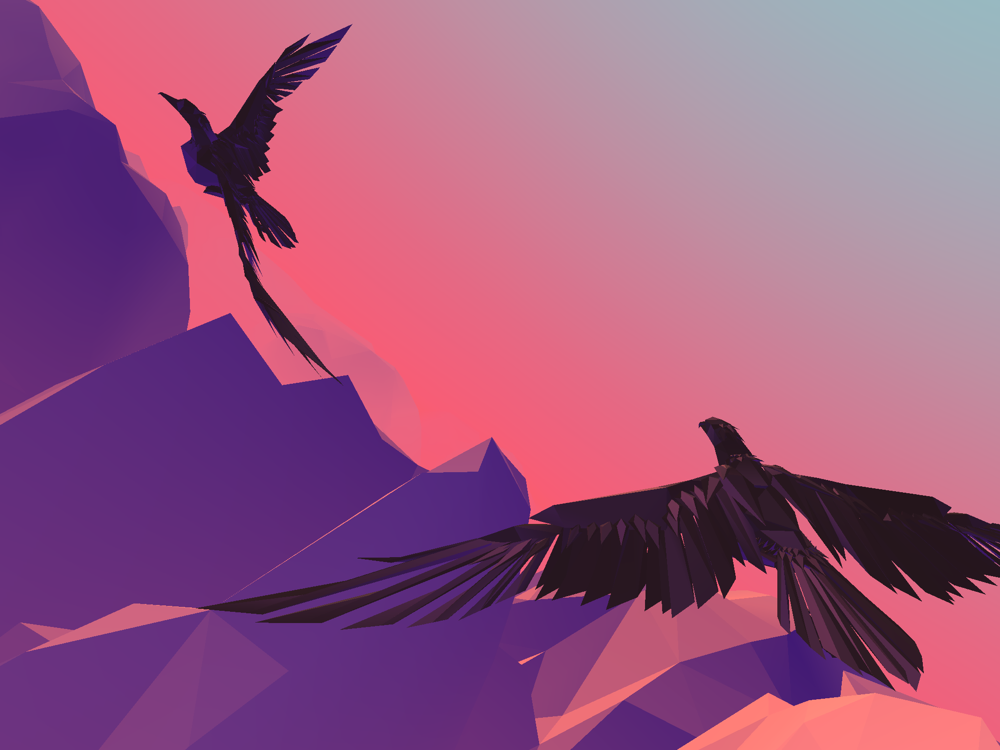

48-hour prototype for Global Game Jam 2015. Two players each control a bird on iOS devices connected via local wifi. Their objective is to locate each other and fly in close formation long enough to make the sun rise.




